我们要宣告世人：上帝的归上帝,恺撒的归恺撒，那是理所当然的。但是，如果国王竟敢坐到基督的圣坛上来了，那么我们将毫不客气的回答：不行
——维辛斯基主教
第87届奥斯卡最佳外语片《修女艾达》预告片
近几年的奥斯卡最佳外语片，我只中意两部，伊朗的《一次别离》和波兰的《修女艾达》。
一个激烈，一个静默，一个关于伊斯兰，一个关于天主教，一个面向现在，一个追问过去。
两部作品内涵都很丰富，都通过建构家庭、社会以及信仰的矛盾去追问未来，面对无望的现实以及沉重的过去，我们该如何走下去。
今天，我们一起走入《修女艾达》的世界，用屠杀和逼迫的历史来思想信仰的真实。
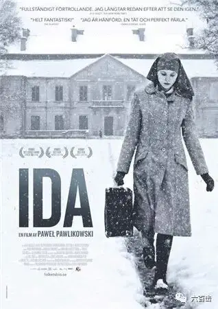
-01- 寻亲之旅
故事发生在60年代的波兰，导演为了很好的呈现那个时代的感觉，电影采用了4:3的画幅，并且使用黑白摄影来增强电影的凝重感。
整部电影的摄影非常美，每一帧都像一幅画。
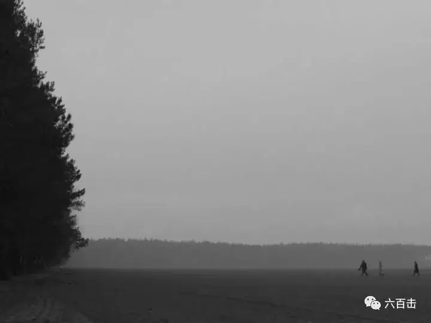
修女艾达自小在天主教修道院长大，在她正式宣誓成为全职服侍上帝的修女前，修道院为了慎重起见，建议艾达在作出决定之前，去见一下自己唯一的亲人姨妈旺达。
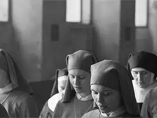
姨妈旺达是一个工作干练、言辞犀利、手握重权的检察官。
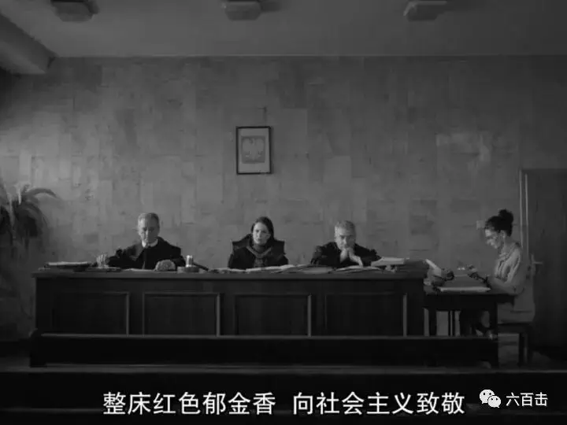
她被称为“红发旺达”，二战时期参加过游击队，战争结束后，成为一个公务员，在苏联模式下，旺达最终能够身居高位，手上自然沾上了很多无辜人的血。
旺达是一个犹太人，本应该很自然成为一名犹太教徒，但是在共产主义傀儡政权下，她显然是一个无神论者，在信仰上，旺达处于一种割裂的状态。
所以到最后，她对信仰不屑一顾，完全成为一个耽于享乐、私生活混乱的女人，总是手叼香烟，游走于酒吧、音乐会，和不同的男人发生关系，但却始终独身一人。
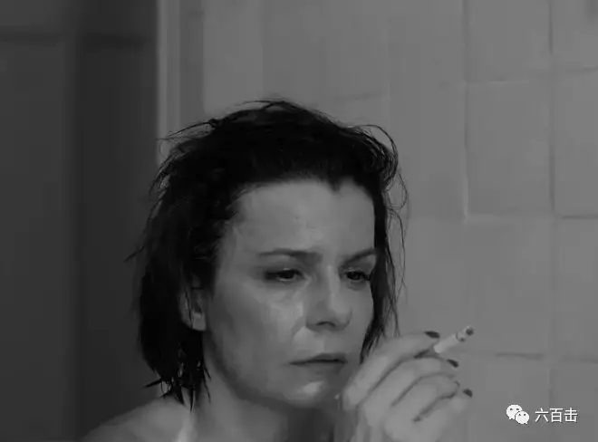
旺达见到艾达后，告诉艾达，她是一个犹太人，她的父母死于集中营。
虽然旺达对艾达的信仰不屑一顾，但是看到单纯、善良的艾达，她还是想要帮助艾达找到她父母的尸骨，然后好好安葬。
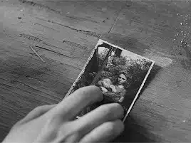
就这样两人开始了寻亲之旅，这是典型的公路片套路，但是本片却没有跌宕起伏的剧情，也没有奇遇和感人至深的情感转变。
甚至根本就不存在寻找和追溯，因为旺达早已知道了过去发生的事情，只是她不想面对过去。
而艾达的出现又让她不得不去面对过去，旺达利用自己的职务，很快找到了在二战时期杀害妹妹、妹夫的人，她同时发现连同妹妹、妹夫一起死去的还有自己的儿子。
杀人凶手当时也只是一个波兰农民，当时艾达和旺达的儿子都很小，农民将艾达送给了牧师，但却杀害了旺达的儿子。
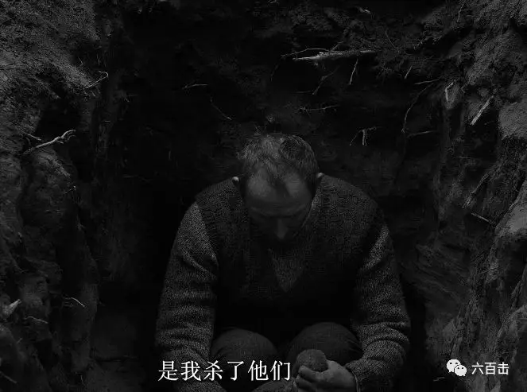
因为旺达的儿子受了犹太人的割礼，无法掩藏其犹太人的身份，所以痛下杀手。
历史总是这么残酷，二战中的犹太人除了受到德国人的屠杀，还有很多犹太人是被波兰人杀害。
旺达抱着自己儿子的骸骨走向远方，一向坚强的旺达不愿意在其他人面前暴露自己的软弱。
安葬好亲人的尸骨后，旺达将艾达送回到修道院。
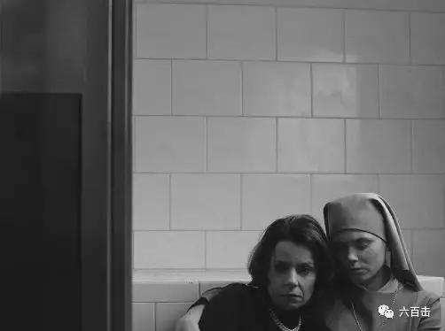
-02- 不能承受的生命之轻
这次寻亲之旅，寻到的不是安慰和幸福，而是难以面对的悲惨过去。
尤其是对于旺达，她从开始就知道儿子早已被杀害。
旺达企图用未来和享乐去遗忘过去，但是当她捧着累累白骨的时候，旺达才明白她根本无法面对过去，无法面对沉重的历史。
在惨痛的阴影下，旺达现在的工作和享乐毫无意义，甚至来说，是一种罪恶。
一向决绝的旺达最终从窗户一跃而下，没有一丝犹豫和徘徊。
面对悲痛，“红发旺达”在逃避和空虚中结束了自己的生命，她始终没有像艾达那样向上仰望，而没有了上帝的旺达，生命中只有不可承受之轻。
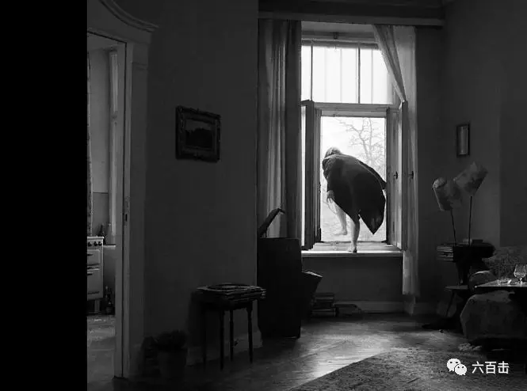
而回到修道院的艾达没有选择成为修女。
艾达总是有些心神不宁，她来到耶稣像前，告诉上帝，她还没有做好准备。
艾达再次离开修道院去找自己的姨妈，可惜姨妈早已不在人世。
此前与姨妈一起虽然短暂，但姨妈的生活却勾起了艾达的好奇之心。
参加完姨妈葬礼后，艾达模仿着自己的姨妈，换上了美丽的衣服，放出了自己一头美丽的红发，穿上了高跟鞋，还学着像姨妈那样抽烟。
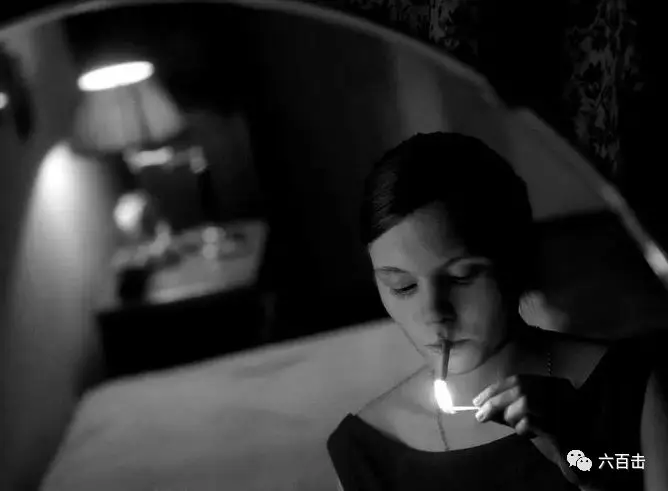
甚至，艾达偷吃了禁果，和此前偶遇的萨克斯演奏歌手发生了关系。
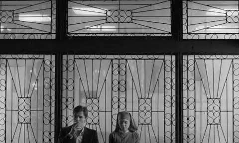
在床上，艾达问萨克斯歌手：
“以后我们要做什么呢”
歌手回答说：“跟我去海滩吧，那里特别好玩”
“然后呢？”
“然后我们就结婚，组成家庭。”
“然后呢？”
“然后…就普通生活呗。”
艾达沉默了一下，将身子转了过去。
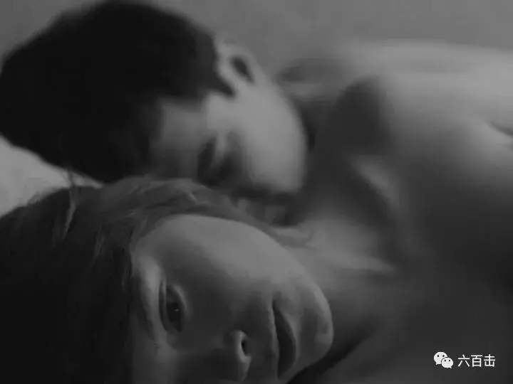
天刚刚亮，艾达重新换上了修女服，静静地离开了萨克斯歌手，走向了修道院。
艾达似乎通过模仿旺达窥见了姨妈的空虚和孤独，她明白肉体的情欲并不能真正使她满足，那一刻艾达也许已经真正准备好侍奉上帝。
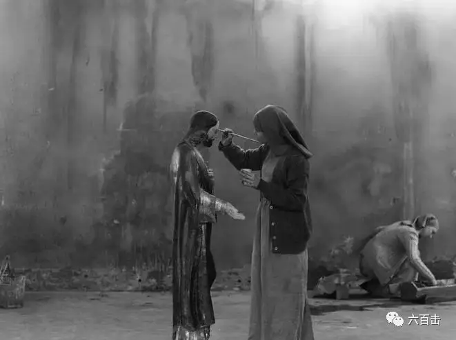
-03- 静默的叙事 留白的摄影
这部电影所讲述的故事并不复杂，但是表现的角度和方式却非常特别，电影用留白和静默的方式呈现了悲痛、控诉了黑暗。
旺达的自杀以及艾达的选择都没有精心的铺垫和过多的阐释，一切都在不言中，所留给观众和那段黑暗历史的只有说不出的叹息和沉默。
而与叙事相匹配的形式风格，导演也把握的特别准，除了最后的场景，电影镜头几乎静止不动，再加上黑白画面，使电影更加凝重，而这种感受与电影所面对的悲惨历史完全匹配。
而整部电影中，导演用构图和摄影呈现了上帝的角色，电影中的人物很多时候处于画框三分之一之下。
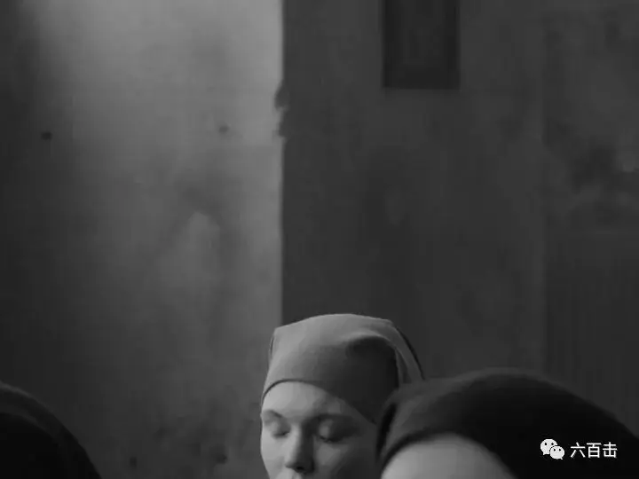
大量留白的画面是艾达信仰世界以及静默历史中真正的主角——上帝。
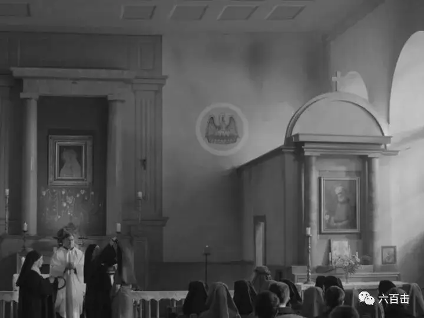
而随着剧情的发展，当艾达迈入世俗化的时候，这种充满神圣感和敬畏感的构图也随之消失。
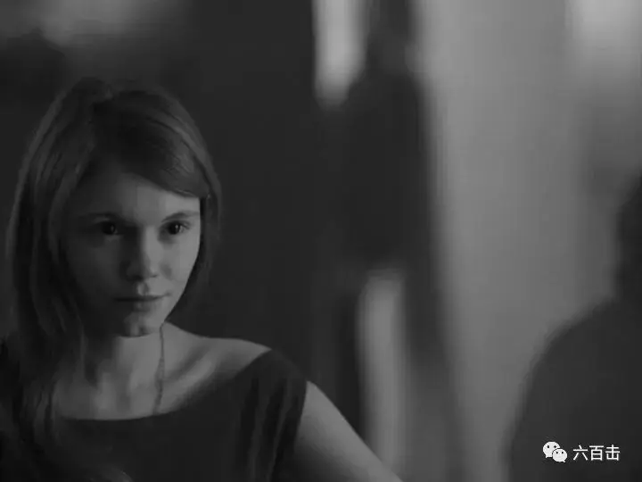
如此不同寻常的叙事和风格让纽约时报惊叹：
导演帕维利科斯基先生通过80分钟严肃、精心设计的黑白画面，以惊人的简洁和静默，穿透了波兰历史上最黑暗、最棘手的丛林，控诉着斯大林主义和大屠杀的罪行。
-04- 波兰的良心——教会
这部追问历史的作品多少有些昏暗，甚至让人绝望，很多中国观众也将艾达最后的选择看作是一种看破红尘的归隐。
事实上，天主教在波兰一点都不归隐，天主教徒在波兰每一个最黑暗的时候都是站在最前面的人，信仰并不是我们所理解的心理安慰，而是真真实实的力量。
现代民主能够产生于西方国家，追本溯源都是基于信仰，而这一强大的信仰基因也直接帮助波兰最终推翻铁幕，迈向自由：
二战结束后，波兰成为华约社会主义阵营中的一位，国家处于一种白色恐怖中，人权和民主遭到无情的践踏。
1947年后，波兰的选票民主名存实亡，50年代，由于天主教群众基础较大，当时的政府采用较为宽松的政策。
此时的波兰基本还有舆论自由，信仰自由，60年代政府逐步收紧政策，异见分子被杀，很多主教被抓，政府设立波兰版的三自教会“圣象牌协会”，关闭教会学校，不允许天主教人士参政议政。
面对白色恐怖和政府对信仰自由的践踏，教会转到地下讲授神学，关心社区，教会并没有向政治压迫妥协，而是继续大胆参政议政，即使会受到更大的逼迫。
教会公开反对在宪法中写入波兰党对波兰政府的领导作用的条款，当时的教会领袖卡罗尔·沃伊蒂瓦很敏锐的觉察到，一党制国家的概念“就是剥夺人民权利”，而“集体化将导致个人及其人格的完全毁灭”。
教会甘愿背起十字架，反对专制，大胆宣告“领导波兰明天的是耶稣”，教会成为波兰白色恐怖时期的良心。
而随着教会的坚持和不断博弈，波兰统一党很多计谋均告破产，在教会施压下，政府解除了国内最有影响力的世俗天主教组织“圣象牌协会”主席，断了波兰特色社会主义宗教的路子。
后来卡罗尔被选为教宗，更引起波兰全国范围内宗教热诚。
1979年6月2日，教宗抵达华沙机场，他下飞机的第一个动作，就是跪下亲吻华沙的土地，这个象征性的动作一下就点燃了波兰人的民族情绪，全波兰的教堂钟声同时响起，向教宗祈祷祝福的声音充斥着整个波兰。
40万虔诚的天主教徒举起木质的十字架，激动并且有节奏的喊到：“我们要上帝，我们要上帝，我们的家庭需要上帝，我们的书籍需要上帝，我们的学校需要上帝，我们的政府需要上帝”。
在弥撒中，教宗宣布：“波兰人不要畏惧，要用信仰的力量壮大自己”；“从人类的历史上排除耶稣，是反人类的原罪”，矛头直指波兰政府。
教会也逐渐打破政府不允许参政议政的红线，到了1980年，全党三分之二的党员是天主教徒。
时任苏联部长会议主席的勃列日涅夫在与波兰统一党领导人的对话中明确的说道：“教会早晚会掐住我们的脖子，让我们窒息”
1983年，团结工会领导人瓦文萨的行动更直接地推进波兰摆脱了政府独裁。
瓦文萨的母亲是一位极其虔诚的天主教徒，据瓦文萨自己讲，他的母亲的祖上几乎每一代都出过神职人员（牧师，僧侣或者修女）。
而母亲的虔诚无疑也大大影响了幼年时期的瓦文萨，这也为瓦文萨与教会合流推翻人民波兰政权埋下伏笔。
同年10月，瓦文萨获得了诺贝尔和平奖，这无疑又是对团结工会活动的一剂强心针。
在1987年12月的一份民意测验也验证了这一点，在“谁最值得信任”这一问题上，78.8％的人将票投给了教会。
1989年人民波兰走完了它45年的历史，正式消失在历史长河之中。
同一年，波兰自己民选的总统产生，人权、民主和自由重新回到人民手中。
关注并回复：修女艾达
获取电影资源
相关推荐：
《三块广告牌》| 当正义缺席时，出路在哪里？
卓别林最后的演讲
光影圣徒罗伯特.布列松 | 他是最伟大的法国导演，是大师中的大师
《超脱》| 我的灵魂失语了
官方说法
100双绝望的眼睛
这里没有挑逗你眼目情欲的小鲜肉
也没有挑动你肉体情欲的段子
更没有膨胀你今生骄傲的鸡血
我们只在乎那些最质朴真诚的作品
在那里我们才能恢复真正的想象力
我们也坚信这才是我们真正需要的

ID:Six_hundred_hits
长按二维码，一键关注
【六百击】
-END-
电影评论
尽情分享朋友圈

苹果打赏通道